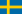

Zlatan Ibrahimović (svenskt uttal: [ˈslaːtan ɪbraˈhiːmɔvɪtɕ] (lyssna)), född 3 oktober 1981 i Västra Skrävlinge församling i Malmö,[3][4] är en svensk fotbollsspelare som spelar för Manchester United. Ibrahimović anses av många som Sveriges bäste fotbollsspelare genom tiderna.[5][6] Från 2001 till 2016 spelade han i svenska fotbollslandslaget, där han med sina 62 mål blev den främste målgöraren genom tiderna. Ibrahimović har tilldelats Guldbollen, priset till Sveriges bäste fotbollsspelare, elva gånger.
Under sina femton år som professionell spelare har han vunnit ligan vid elva tillfällen med fem olika lag i fyra länder. Han vann vid två tillfällen skytteligan i italienska Serie A och vid tre tillfällen i franska Ligue 1.
Ibrahimović blev rankad som världens fjärde bäste spelare 2013. Hans övergång från Inter till Barcelona 2009 var Barcelonas dittills dyraste spelarköp (69 miljoner euro).[7][8]
2015 var Ibrahimović enligt tidskriften Forbes den 55:e bäst betalde kändisen i världen, med en årsinkomst på 39 miljoner dollar.[9]
Ibrahimović växte upp i stadsdelen Rosengård i Malmö.[10] Hans far är bosniak och modern är kroat.[11] Efter föräldrarnas skilsmässa när Ibrahimović var liten bodde han först hos sin mor i Rosengård men flyttade senare till sin far. Han växte upp under enkla förhållanden och har bland annat berättat om avsaknaden av lagad mat hemma hos fadern och bråk inom familjen.[12]
På grusplanen vid Cronmans väg började Ibrahimović spela fotboll.[4][13] Han fick sina första fotbollsskor när han var fem år och började spela i Malmö BI 1988. Ibrahimović kom även att spela med BK Flagg och FBK Balkan innan han 1994 värvades till Malmö FF.[14][15][16] Han tränade även taekwondo i 14–17-årsåldern i Malmöklubben Enighet som i 2010 tilldelat honom svart hedersbälte.[17] Efter att ha gått ut Stenkulaskolan och gått merparten av fotbollsgymnasiet på Borgarskolan avbröt Ibrahimović studierna för att enbart satsa på fotbollen[källa behövs].
Ibrahimović gjorde A-lagsdebut i Malmö FF under Roland Anderssons ledning 1999 och började på allvar uppmärksammas för sitt spel i Malmö FF i Allsvenskan 1999, hans första mål i Allsvenskan gjordes 30 oktober 1999 mot Frölunda. Malmö åkte ur Allsvenskan 1999 och nästkommande säsong i Superettan gjorde han tolv mål. Ibrahimović spelade för Malmö FF de inledande omgångarna i Allsvenskan 2001. I premiären mot AIK gjorde han två mål.[18]
I juli 2001 blev Ibrahimović proffs i det nederländska laget Ajax. Malmö FF fick drygt 80 [19]) miljoner kronor för honom, den då högsta summan för en skandinavisk spelare[19] och ännu den högsta för en allsvensk spelare. Till en början fick Ibrahimović lite speltid i Ajax under tränaren Co Adriaanse. Då Adriaanse sparkades i slutet av november 2001 tog Ronald Koeman över tränarrollen och gav Ibrahimović en ordinarie plats i Ajax, som kom att vinna både nederländska ligan och cupen säsongen 2001/02. Ibrahimović gjorde sex mål på 24 matcher för Ajax under sin debutsäsong.
I september 2002 gjorde Ibrahimović två mål i sin Champions League-debut mot Lyon. Totalt gjorde han fem mål i Champions League och 13 mål i ligan 2002/03, där Ajax slutade tvåa. År 2003 blev Italienfödde nederländaren Mino Raiola Ibrahimovićs agent. Säsongen 2003/04 vann Ibrahimović åter nederländska ligan med Ajax och gjorde 13 mål på 22 matcher. Han hann göra tre mål på tre matcher för Ajax under säsongen 2004/05 innan flytten till Italien. I sin avslutningsmatch mot NAC Breda gjorde han ett mål som valdes till årets mål av Eurosports tittare.[20]
| Klubb | Säsong | Inhemsk liga | Nat. turn. | Internat. turn. | Totalt | |||||
|---|---|---|---|---|---|---|---|---|---|---|
| Serie | SM | Mål | SM | Mål | SM | Mål | SM | Mål | ||
|  Malmö FF |
1999 | Allsvenskan | 6 | 1 | 0 | 0 | 0 | 0 | 6 | 1 |
| 2000 | Allsvenskan | 6 | 1 | 0 | 0 | 0 | 0 | 6 | 1 | |
| 2001 | Allsvenskan | 6 | 1 | 0 | 0 | 0 | 0 | 6 | 1 | |
| 2002 | Allsvenskan | 6 | 1 | 0 | 0 | 0 | 0 | 6 | 1 | |